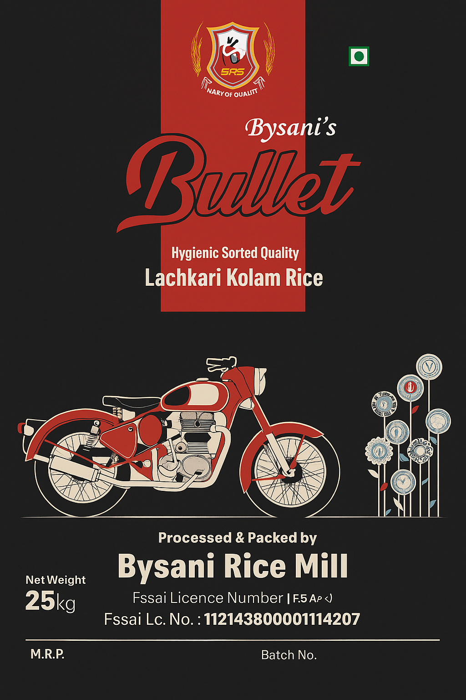

Magic Deer – Premium Silky Sorted Rice
“Eat healthy, live better.”
Premium
Hygienic
Consistent Sorting
Handpicked grains, carefully processed and sorted for consistent quality and taste. Ideal for everyday cooking with fluffy texture and aroma.
- Silky finish & consistent grain
- Great for special meals
Pack Sizes
Common sizes: 25–26 kg (update as needed)
Common sizes: 25–26 kg (update as needed)
HSN
1006 (Rice), 23022020 (Bran)
1006 (Rice), 23022020 (Bran)
Origin
Gauribidanur, Karnataka
Gauribidanur, Karnataka